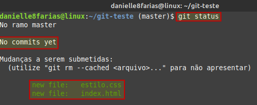
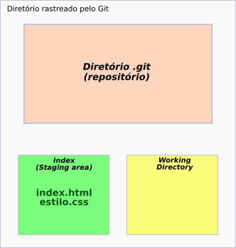
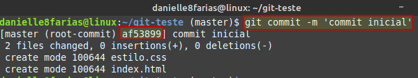
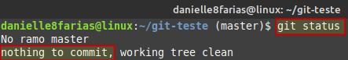
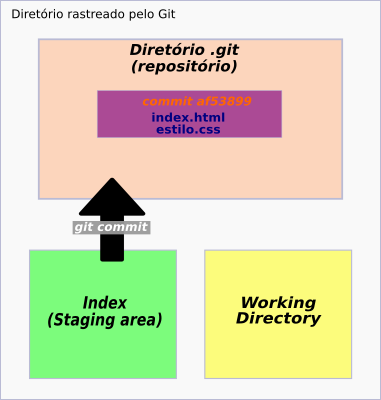

Vamos supor que temos no nosso repositório a seguinte situação:
Temos dois arquivos novos e vamos fazer o nosso primeiro commit.
Enquanto temos no fluxo do git,
Ao colocar os arquivos dentro no repositório, precisamos informar ao Git o motivo desses arquivos, com o comando:
$ git commit -m 'escreva sua mensagem aqui'
- $ indica que você deve usar o usuário comum para fazer essa operação.
- pode-se usar aspas simples ou duplas para escrever a mensagem.
No nosso exemplo, temos:
$ git commit -m 'commit inicial'

Conferindo o estado do Git, temos:
E no fluxo,
Esse conjunto de caracteres e números que aparece ao lado da palavra commit é a chave (ou hash) que identifica o próprio.